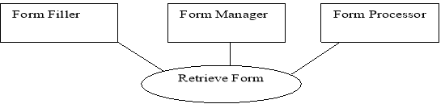
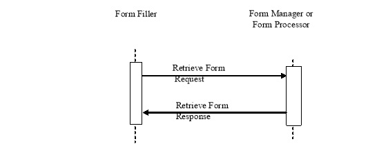

IHE IT Infrastructure (ITI)
Technical Framework
Revision 16.0 – Final Text
This section corresponds to transaction [ ITI-34 ] of the IHE IT Infrastructure Technical Framework. Transaction [ ITI-34 ] is used by the Form Filler and Form Manager or Form Processor Actor s.
This transaction involves a Form Filler requesting a form from a Form Manager or Form Processor. The Form Filler has a formID, and possibly additional workflow information, obtained by a means that is outside the scope of this transaction. The Form Filler may also provide a form instance id to reference a previously submitted form. The Form Manager or Form Processor will return a form or URL corresponding to the given formID, and optionally a form instance id, or else it returns an error response. Forms are defined and constrained below by the format options.

Actor: Form Filler
Role: A forms display and editing system capable of allowing form fields to be completed.
Actor: Form Manager
Role: A system that provides forms based upon requests that provide specific formIDs, and optionally additional work flow data. . Form data is submitted to a Form Receiver.
Actor : Form Processor
Role : A system that provides forms based upon requests that provide specific formIDs, and optionally additional work flow data. Form data from this actor shall be submitted back to itself.
Implementors of this transaction shall comply with all requirements described in ITI TF-2x: Appendix V: Web Services for IHE Transactions.
RFC1738, Uniform Resource Locators (URL), December 1994, http://www.faqs.org/rfcs/rfc1738.html
RFC2616 HyperText Transfer Protocol HTTP/1.1
Extensible Markup Language (XML) 1.0 (Second Edition). W3C Recommendation 6 October 2000. http://www.w3.org/TR/REC-xml.
ITI TF-2x: Appendix V Web Services for IHE Transactions
XForms 1.1, W3C Working Draft. http://www.w3.org/TR/2004/WD-xforms11-20041115/
XHTML™ 1.0 The Extensible HyperText Markup Language (Second Edition).A Reformulation of HTML 4 in XML 1.0. W3C Recommendation 26 January 2000, revised 1 August 2002. http://www.w3.org/TR/xhtml1.
XHTML™ Basic. W3C Recommendation 19 December 2000. http://www.w3.org/TR/xhtm-basic.
http://www.w3.org/TR/xhtml-basic

Figure 3.34.4-1: Interaction Diagram
Retrieve Form involves a Form Filler requesting a form from a Form Manager or Form Processor. The Form Filler shall supply workflow data and prepopulation data. The Form Filler may also supply a form instance id.
The Retrieve Form Request shall provide an archiveURL value, as a nil value or as a URL pointing to a Form Archiver. See Section 3.34.4.1.2 for details.
The Form Filler requests that Form Filler or Form Processor use context information in the selection and/or creation of the returned form by supplying the prepopData argument with well-formed xml representing the Form Filler context. Specification of the prepopData schema is left to content profiles. This value may be nil.
The Form Filler supplies any additional workflow information to be used in the selection and/or creation of the form using the context element of the workflowData parameter. Specification of this context element is left to content profiles.
The response to a Retrieve Form Request returns the form, or reference to a form, and may return a form instance id.
The Form Filler, based upon human decision or application of a rule for automatic operation, requests a form hosted by a Form Manager or Form Processor.
Implementors of this transaction shall comply with all requirements described in ITI TF-2x: Appendix V: Web Services for IHE Transactions. The following parameters are specified for this transaction .
|
Parameter Name |
Optionality |
Description |
Value |
|
prepopData |
R |
The xml context information supplied by a Form Filler for use in pre-populating form fields |
This value shall be nil or a well-formed xml document. |
|
workflowData |
R |
The xml representation of workflow specific values. |
This value is a well-formed xml document.as defined below. |
|
formID |
R |
The identifier of a form. |
A string identifying the form |
|
encodedResponse |
R |
Tells the Form Manager whether or not to return an encoded response |
{true,false} |
|
responseContentType |
O |
An XML attribute of encodedResponse which specifies the type of expected encoded response |
A string whose value is defined by content profiles. Shall not be specified when the value of encodedResponse is “false” |
|
archiveURL |
R |
Tells the Form Manager whether or not the Form Filler is exercising the Archive Option |
the URL of any Form Filler identified Form Archiver or the null string |
|
context |
R |
The xml specifics of workflow context |
Defined by content profiles; may be nil |
|
instanceID |
R |
An id value of a previously submitted instance of data. |
A string identifying an instance of previously submitted data; may be nil. |
The contents of the prepopData parameter is defined in a prepopData schema specified by IHE content profiles. When there is no prepopData the attribute xsi:nil shall be set to “true” (see the support materials).
The content of workflowData parameter shall minimally be:
<workflowData>
<formID>a String identifying the form</formID>
<encodedResponse>false</encodedResponse>
<archiveURL />
<context/>
<instanceID/>
</workflowData>
The responseContentType attribute may be specified only when the value of the encodedResponse parameter is “true”. The value for responseContentType attribute specifies the encoding of the response from the Form Manager or Form Processor. Acceptable values are defined by content profiles. An example of its use is to specify whether the expected response is an XML form definition or an XHTML form. Below is an example of its use:
<workflowData>
<formID>a String identifying the form</formID>
<encodedResponse>false</encodedResponse>
<archiveURL />
<context/>
<instanceID/>
</workflowData>
See the schema provided with the support materials ( ftp://ftp.ihe.net/TF_Implementation_Material/ITI/ ). The workflowData may be extended by IHE content profiles with further definition of the <context> element.
Upon receipt of the Retrieve Form request, the Form Manager or Form Processor shall parse the request and shall return the requested response in the RetrieveFormResponse element, or errors with SOAP Faults. The Form Manager shall return the form or URL based on the values of: a) the encodedResponse; b) the formID; c) any additional workflowData; d) the optionally supplied instanceID.
If encodedResponse is ‘true’, then the response from the Form Manager or Form Processor shall be either a Structured (XML) or Unstructured (non-XML) element. When the encodedResponse parameter is 'true', all anchor addresses that are not fragment identifiers shall be composed of absolute URIs.
If the responseContentType attribute is specified, then the response from the Form Manager or Form Processor shall be a Structured element with appropriate content type, for example, XML form definition or an XHTML form. The Form Manager or Form Processor shall not throw an error if it receives the optional responseContentType attribute.
If encodedResponse is ‘false’, then the response from the Form Manager or Form Processor shall be a URL element that can be used directly by a web browser for retrieval and operation of the form.
The Form Manager or Form Processor may assign and return a value for a form instanceID.
When the Form Filler provides a valid URL in the archiveURL parameter of the request, the Form Manager or Form Processor shall return a form that shall perform an Archive Form transaction upon form submission, in addition to any predefined actions associated with the form submission. As shown in Section 3.36 Archive Form, this additional archival transaction is between Form Filler and Form Archiver Actor s.
When the Form Filler supplies data in the prepopData parameter, the Form Manager or Form Processor may use this information to determine the form to be returned and to pre-populate the fields of the form. The exact use of the prepopData, and the structure, is deferred to the publication of an IHE content profile.
The Form Manager or Form Processor shall use the values within the workflowData parameter, as well as the optionally supplied instanceID, to determine the form to be returned and to pre-populate the fields of the form.
The value of the formID has been previously assigned by the Form Manager or Form Processor to identify a form to be returned to the Form Filler using one of the named format options. A Form Manager or Form Processor may support multiple named options, but for each formID there is only one named option that is supported.
The Form Manager or Form Processor shall use the SOAP Faults defined in Table 3.34.4.1.3-1 when appropriate. Form Fillers shall be capable of accepting other values beyond the ones specified here.
Table 3.34.4.1.3-1: SOAP Faults
|
Description of error |
Code |
Reason Text |
|
There is missing information, such as no formID |
Sender |
Required Information Missing |
|
No form is available |
Sender |
Unknown formID |
An example of a SOAP Fault is:
<env:Envelope xmlns:env="http://www.w3.org/2003/05/soap-envelope"
xmlns:xml="http://www.w3.org/XML/1998/namespace">
<env:Body>
<env:Fault>
<env:Code>
<env:Value>env:Sender</env:Value>
</env:Code>
<env:Reason>
<env:Text xml:lang="en">Required Information Missing</env:Text>
</env:Reason>
</env:Fault>
</env:Body>
</env:Envelope>
As noted in the mitigations section of ITI TF-1: 17.5 Security Considerations, endpoints are free to implement TLS as needed for additional privacy and protection. Content p rofiles, based upon the nature of the data, may require use of ATNA.
This message is triggered by a Form Manager or Form Processor responding to a Retrieve Form request.
The form or URL is returned.
The following parameters are specified for the response of this transaction :
|
Element Name |
Optionality |
Description |
Constraints |
|
form |
R |
The xml element container for the form. The form element Shall contain one of: {Structured, Unstructured, URL} and may also contain an instanceID. |
An element of type urn:ihe:iti:rfd:2007:formDataType, thus it has only child elements and no value. |
|
form/Structured |
O [Note 1] |
The xml element container for the return of encoded, structured form content. |
xs:any
May only be present when the Form Request has encodedResponse value of true. |
|
form/Unstructured |
O [Note 1] |
The xml element container for the return of encoded, unstructured, base64 encoded form content. |
xs:base64Binary
May only be present when the Form Request has encodedResponse value of true. |
|
form/URL |
O [Note 2] |
The xml element container for the return of a pointer to the form. |
xs:anyURI Required when the Form Request has encodedResponse value of false. |
|
form/instanceID |
O |
The xml element containing the value of a form instance |
xs:string |
|
contentType |
R |
Has no meaning when the Form Request encodedResponse value is false. |
xs:string Required; may be nil. The value may be constrained by content profiles. |
|
responseCode |
R |
Not defined. |
xs:string Required; may be nil The value may be constrained by content profiles. |
Note 1 : When the Form Request has encodedResponse value of true, then one of the two fields is required, and the URL field is forbidden.
Note 2: When the Form Request has encodedResponse value of false, then the URL field is required, and Structured and Unstructured are forbidden.
The Form Filler shall retrieve from the URLvalue returned if the Retrieve Form encodedResponse value was false.
Regardless of the Retrieve Form encodedResponse value, the Form Filler may fill any form fields needed for form submission, and may display the form for user interaction.
A Form Manager or Form Processor shall return a form. If the form is returned as a URL, because encodedResponse is false on the request, the form shall be formatted as XHTML using XHTML Basic and W3C HTML Compatibility Guidelines provided in the Appendix C of the W3C XHTML 1.0 Recommendation. If the form is returned as Structured content, it shall be capable of being transformed into XHTML. In all cases, the returned form shall support the Submit and all required Archive transactions.
A Form Manager or Form Processor that supports the XForms Option shall additionally be capable of returning a form, whether returned as the response or referenced by a returned URL, that conforms to XForms 1.1. The host language for the XForm shall be XHTML Basic according to the W3C HTML Compatibility Guidelines provided in the Appendix C of the W3C XHTML 1.0 Recommendation. The returned form shall support the Submit and all required Archive transactions.
The Retrieve Form request and response shall be transmitted using Synchronous Web Services Exchange, according to the requirements specified in ITI TF-2x: Appendix V.
The Retrieve Form transaction shall use SOAP 1.2.
WSDL Namespace Definitions
|
ihe |
urn:ihe:iti:rfd:2007 |
|
soap12 |
http://schemas.xmlsoap.org/wsdl/soap12/ |
|
wsaw |
http://www.w3.org/2005/08/addressing |
|
xsd |
http://www.w3.org/2001/XMLSchema |
These are the requirements for the Retrieve Form transaction presented in the order in which they would appear in the WSDL definition:
These are the requirements that affect the wire format of the SOAP message. The other WSDL properties are only used within the WSDL definition and do not affect interoperability. Full sample request and response messages are in Section 3.34.5.1 Sample SOAP Messages.
An informative WSDL for the Form Manager and a full XML Schema Document for the RFD types is available online on the IHE FTP site . See ITI TF-2x: Appendix W.
The samples in the following two sections show a typical SOAP request and its relative SOAP response. The sample messages also show the WS-Addressing headers <Action/>,
<MessageID/>, .; these WS-Addressing headers are populated according to ITI TF-2x: Appendix V: Web Services for IHE Transactions. Some of the body of the SOAP message is omitted for brevity.
<soap:Envelope xmlns:soap="http://www.w3.org/2003/05/soap-envelope" xmlns:xsi="http://www.w3.org/2001/XMLSchema-instance" xmlns:xsd="http://www.w3.org/2001/XMLSchema">
<soap:Header>
<wsa:To>http://localhost:4040/axis2/services/someservice</wsa:To>
<wsa:MessageID>urn:uuid:76A2C3D9BCD3AECFF31217932910053</wsa:MessageID>
<wsa:Action soap:mustUnderstand="1">urn:ihe:iti: 2007:RetrieveForm</wsa:Action>
</soap:Header>
<soap:Body>
<RetrieveFormRequest xmlns="urn:ihe:iti:rfd:2007">
<prepopData>...some xml content...</prepopdata>
<workflowData>
<formID>1</formID>
<encodedResponse>false</encodedResponse>
<archiveURL />
<context />
<instanceID />
</workflowData>
</RetrieveFormRequest>
</soap:Body>
</soap:Envelope>
< soap:Envelope xmlns:soap="http://www.w3.org/2003/05/soap-envelope" xmlns:xsi="http://www.w3.org/2001/XMLSchema-instance" xmlns:xsd="http://www.w3.org/2001/XMLSchema">
<soap:Header>
<wsa:To>http://localhost:4040/axis2/services/someservice</wsa:To>
<wsa:MessageID>urn:uuid:76A2C3D9BCD3AECFF31217932910053</wsa:MessageID>
<wsa:Action soap:mustUnderstand="1">urn:ihe:iti: 2007:RetrieveFormResponse</wsa:Action>
</soap:Header>
<soap:Body>
<RetrieveFormResponse xmlns="urn:ihe:iti:rfd:2007">
<form>
<URL>http://somehost/xxx/services/someForm</URL>
<instanceID>1.2.3.4.5</instanceID>
</form>
<contentType />
<responseCode />
</RetrieveFormResponse>
</soap:Body>
</soap:Envelope>